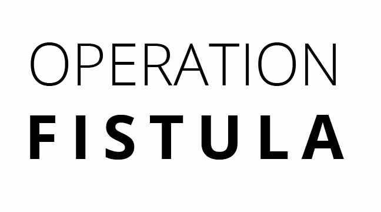

DESIGN AND DATA VISUALIZATION
-
Rhino Poaching
Rhino Poaching in South Africa from 2006-2016
-
Cricket World Cup 2019 Squads
Analysis of Cricket World Cup 2019 squads
-
The Reykjavik Index for Leadership
The Reykjavik Index measures the extent to which men and women are viewed equally in terms of the suitability of individuals for positions of power
-

Operation Fistula
Obstetric Fistula is an injury that happens when quality c-section is unavailable
-
Wind Energy in the US
Texas, Oklahoma, and Iowa are the leading producers of wind energy in 2018